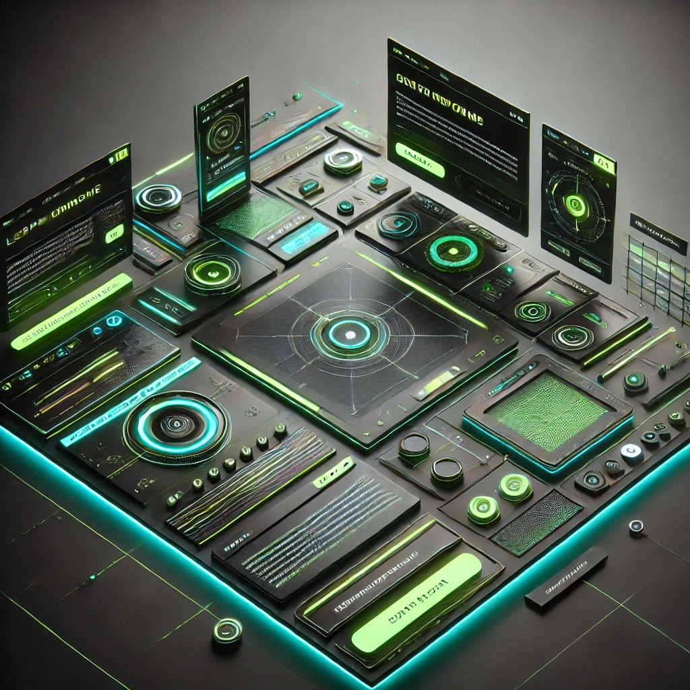

Uma abordagem que combina funcionalidade e estética, garantindo uma experiência imersiva e envolvente para os usuários.
A base tecnológica robusta garante responsividade, acessibilidade e escalabilidade no projeto.
Estilização moderna e responsiva com classes utilitárias.
Componentes pré-construídos para acelerar o desenvolvimento.
Estrutura compatível com múltiplos dispositivos e navegadores.
Uma hierarquia visual clara e um fluxo intuitivo guiam os usuários de forma eficiente.
Imagem de exemplo para demonstrar um dos nossos exemplos de design
A experiência do usuário é priorizada com design centrado e componentes intuitivos.
Interações fluídas e animações suaves proporcionam um ambiente envolvente.
Navegação simplificada e clareza visual garantem acessibilidade.
O projeto de design de interfaces demonstrado apresenta uma abordagem moderna e funcional para a criação de plataformas interativas, focando na experiência do usuário (UX) e no apelo visual (UI). Utilizando tecnologias robustas como TailwindCSS e DaisyUI, o layout garante responsividade, acessibilidade e integração fluida com elementos interativos, como navegação intuitiva, animações suaves e seções destacadas por contraste de cores. Além disso, o design prioriza a clareza na hierarquia visual, guiando o usuário através de um fluxo lógico, desde a introdução da proposta até as chamadas para ação. Componentes como depoimentos, perguntas frequentes e demonstrações visuais reforçam a confiabilidade e a atratividade da plataforma. Esse projeto evidencia a importância de combinar estética com funcionalidade, utilizando práticas de design centradas no usuário e implementando as melhores tecnologias para garantir uma experiência imersiva e envolvente. A estrutura criada é adaptável, escalável e preparada para evoluções futuras, destacando-se como um exemplo de excelência no design web contemporâneo.